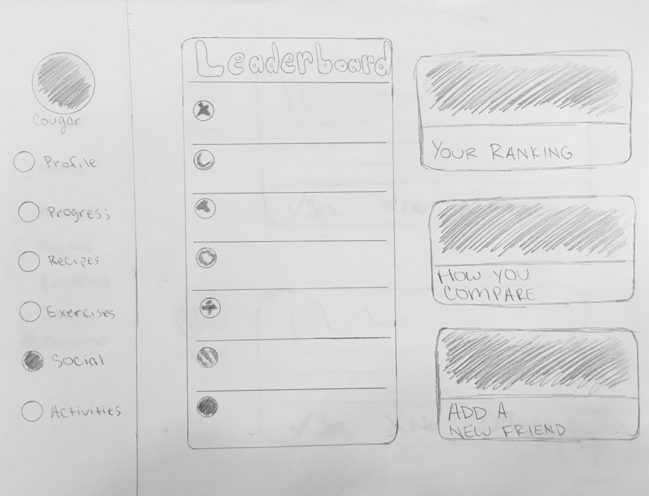
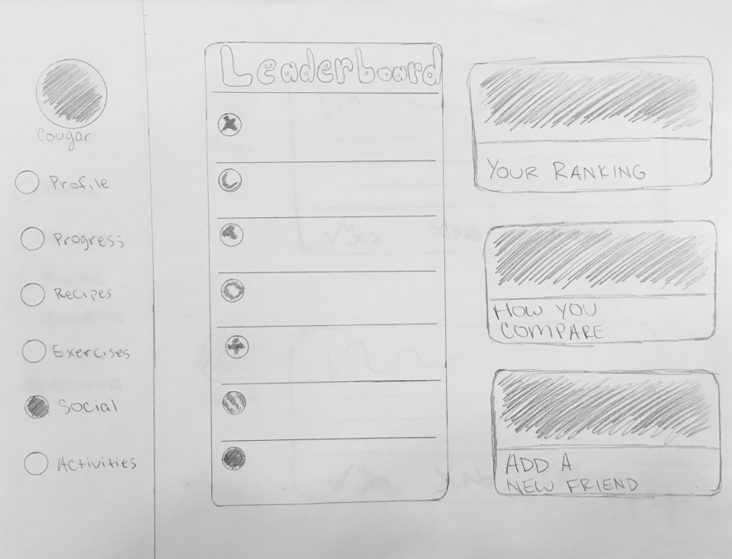

Health & Fitness App
Role: Project Manager, Designer
The desktop version of a series of connected health and fitness applications prototyped after extensive research.
The Problem
The problem we were tasked to solve in this project was to build an application which would help users manage their cholesterol and would overall promote healthy living.
We set out to tackle this problem by including features such as an exercise and recipe recommendations, a comprehensive personal progress chart, and a leaderboard in hopes to promote healthy competition between users.
The Users
The users were determined by researching those most commonly effected by heart conditions, and more specifically those most likely to suffer from high cholesterol.
After identifying our primary and secondary users, we created personas for both of them which contained a photo to but a face to the name, their goals, needs, and motivations, as well as more demographic information about them such as education, occupation, and economic status.
Primary Users
We determined our primary users to be older hispanic males, generally ranging from 55-65 as research has indicated that tend to suffer the most from heart conditions and have the highest cholesterol levels in the United States.
Secondary Users
Our secondary users then were identified as African-American women from the ages of 30-40 as research showed this demographic to have the second highest cholesterol levels.
The Process
Initial Research
On top of researching what demographics were most commonly affected by heart conditions and high cholesterol levels, we moved on to researching common trends and features across existing health and fitness apps, in order to best fit into the market.
We found that a large number of fitness apps contained some form leaderboard, pre-selected exercises, and a progress chart whereas more health focused applications included a variety of recipes and progress charts as well.
As such we sought to include these same features in our own application.
Card Sorting
In order to develop our cards for testing, we begun by laying out the content of the site and changing that content into tasks our users are able to do on the site. From there we further expanded our cards by looking at the situation in which users would be using the product. We created a flowchart to put ourselves in the position of the user and fill in the gaps.
We laid the cards out evenly spaced on a table in front of our subjects. We read the description of the product, so that the subjects would have some background information. We asked them to sort the cards into groups based on their similarity, and from there allowed the subjects to group the cards together however they thought made the most sense.
After doing the card sorting with both our classmates and non-expert subjects, we found that one thing each test had in common was that multiple cards could fit into a couple different groups. For example, the “create a health profile” card could potentially encompass a number of different themes, including medicine, fitness, and food. This realization prompted us to change the format of our product slightly, so that creating a health profile encompasses certain aspects of these groupings, while leaving the more in-depth information as optional.
There were also cards that did not fit into any groupings in some of the card sorting experiments, and we handled those cards in a few different ways. For example, we discarded the “search for cholesterol lowering tips” card, as it didn’t fit into any groupings and we didn’t think it added any value to our product as a whole. The card labeled “set your personal goals” did not fit into any groupings in one of our experiments, but because we still felt that card would be beneficial to our product, we decided to keep it. It ended up as an “optional” option while creating a health profile.
Low Fidelity Prototype
After identifying what needed to be where in accordance with our card sorting research, we developed a low fidelity protoype with InVision.
 
The Result
The project ended here at the low-fidelity prototyping stage, however, if our app was to progress onto the next stages of development, we would put a heavier focus on cholesterol tracking, and the specifics of what aspects will be tracked in the “progress” charts. We would also add another reward-based element to the app, in addition to the leaderboard, in order to provide an incentive for users who would shy away from the social element of the app.